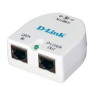

Репитер — прибор, как правило, с двумя портами, предназначенный для повторения сигнала с целью увеличения длины сетевого сегмента
Одной из первых задач, которая стоит перед любой технологией транспортировки данных, является возможность их передачи на максимально большое расстояние. Физическая среда накладывает на этот процесс своё ограничение — рано или поздно мощность сигнала падает, и приём становится невозможным. Но ещё большее значение имеет то, что искажается «форма сигнала» — закономерность, в соответствии с которой мгновенное значение уровня сигнала изменяется во времени. Это происходит в результате того, что провода, по которым передаётся сигнал, имеют собственную ёмкость и индуктивность. Электрические и магнитные поля одного проводника наводят ЭДС в других проводниках (длинная линия).
Привычное для аналоговых систем усиление не годится для высокочастотных цифровых сигналов. Разумеется, при его использовании какой-то небольшой эффект может быть достигнут, но с увеличением расстояния искажения быстро нарушат целостность данных.
Проблема не нова, и в таких ситуациях применяют не усиление, а повторение сигнала. При этом устройство на входе должно принимать сигнал, далее распознавать его первоначальный вид, и генерировать на выходе его точную копию. Такая схема в теории может передавать данные на сколь угодно большие расстояния (если не учитывать особенности разделения физической среды в Ethernet).